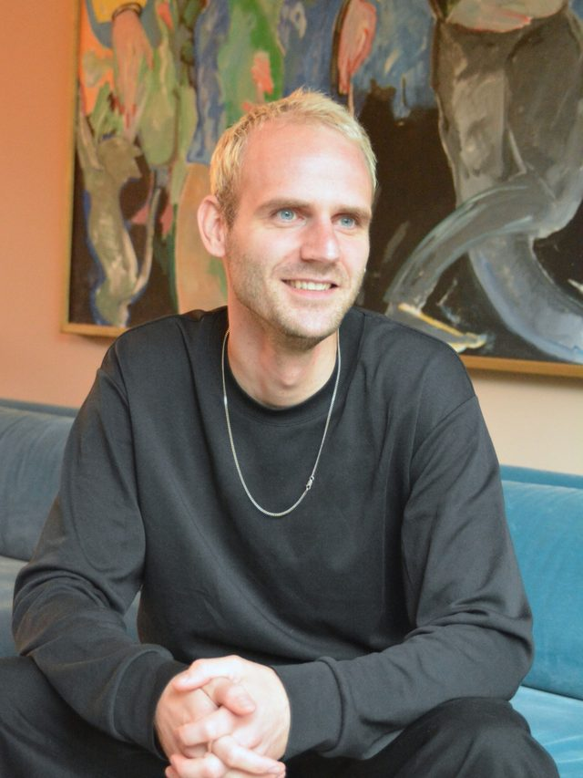

Tendermanagement en subsidies
Voor bedrijven die inschrijven op aanbestedingen en subsidies.
- Binnen twee werkdagen een aanpak en voorstel
- Regie op bidstrategie, planning en schrijfteam
- Bewijs en bouwstenen voor de volgende keer
Zelfstandig professional in publiek-private samenwerking, in de gebouwde omgeving en energietransitie.

Wat ik doe
Ik help bedrijven bij aanbestedingen en subsidietrajecten, en publieke organisaties als programma- en interimmanager. Je krijgt het resultaat, en je houdt iets over dat blijft werken.
Voor bedrijven die inschrijven op aanbestedingen en subsidies.
Voor gemeenten, provincies, waterschappen en netbeheerders.
Contact
Stuur me een bericht of mail en dan plannen we een belletje of kopje koffie.
Kom in contact